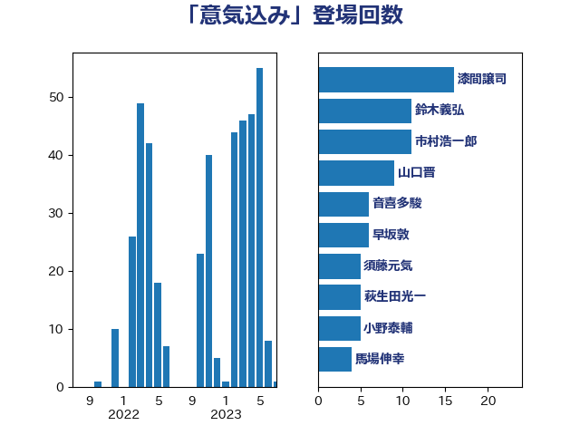

単語「意気込み」

| 田村まみ | 国民民主党 | 9 回 |
| 国光あやの | 自由民主党 | 8 回 |
| 萩生田光一 | 自由民主党 | 5 回 |
| 谷田川元 | 立憲民主党 | 5 回 |
| 鈴木義弘 | 国民民主党 | 5 回 |
| ながえ孝子 | 無所属 | 4 回 |
| 加藤鮎子 | 自由民主党 | 4 回 |
| 尾身朝子 | 自由民主党 | 4 回 |
| 山口晋 | 自由民主党 | 4 回 |
| 田島麻衣子 | 立憲民主党 | 4 回 |
| 簗和生 | 自由民主党 | 4 回 |
| 自見はなこ | 自由民主党 | 4 回 |
| 進藤金日子 | 自由民主党 | 4 回 |
| 音喜多駿 | 日本維新の会 | 4 回 |
| 上杉謙太郎 | 自由民主党 | 3 回 |
| 小野泰輔 | 日本維新の会 | 3 回 |
| 岬麻紀 | 日本維新の会 | 3 回 |
| 工藤彰三 | 自由民主党 | 3 回 |
| 東徹 | 日本維新の会 | 3 回 |
| 滝沢求 | 自由民主党 | 3 回 |
| 鈴木貴子 | 自由民主党 | 3 回 |
| 長妻昭 | 立憲民主党 | 3 回 |
| 三木亨 | 自由民主党 | 2 回 |
| 上野通子 | 自由民主党 | 2 回 |
| 中島克仁 | 立憲民主党 | 2 回 |
| 中曽根康隆 | 自由民主党 | 2 回 |
| 五十嵐清 | 自由民主党 | 2 回 |
| 井上英孝 | 日本維新の会 | 2 回 |
| 伴野豊 | 立憲民主党 | 2 回 |
| 加藤竜祥 | 自由民主党 | 2 回 |
| 古川元久 | 国民民主党 | 2 回 |
| 古川直季 | 自由民主党 | 2 回 |
| 吉良州司 | 無所属 | 2 回 |
| 大野泰正 | 自由民主党 | 2 回 |
| 宮崎雅夫 | 自由民主党 | 2 回 |
| 小山展弘 | 立憲民主党 | 2 回 |
| 小森卓郎 | 自由民主党 | 2 回 |
| 山岸一生 | 立憲民主党 | 2 回 |
| 山崎誠 | 立憲民主党 | 2 回 |
| 岡本あき子 | 立憲民主党 | 2 回 |
| 川崎ひでと | 自由民主党 | 2 回 |
| 平沢勝栄 | 自由民主党 | 2 回 |
| 打越さく良 | 立憲民主党 | 2 回 |
| 本田顕子 | 自由民主党 | 2 回 |
| 柴田巧 | 日本維新の会 | 2 回 |
| 橋本岳 | 自由民主党 | 2 回 |
| 櫻井周 | 立憲民主党 | 2 回 |
| 比嘉奈津美 | 自由民主党 | 2 回 |
| 沢田良 | 日本維新の会 | 2 回 |
| 泉田裕彦 | 自由民主党 | 2 回 |
| 浜田聡 | NHK党 | 2 回 |
| 漆間譲司 | 日本維新の会 | 2 回 |
| 牧島かれん | 自由民主党 | 2 回 |
| 田中健 | 国民民主党 | 2 回 |
| 白石洋一 | 立憲民主党 | 2 回 |
| 石田昌宏 | 自由民主党 | 2 回 |
| 神津たけし | 立憲民主党 | 2 回 |
| 神谷裕 | 立憲民主党 | 2 回 |
| 舩後靖彦 | れいわ新選組 | 2 回 |
| 藤岡隆雄 | 立憲民主党 | 2 回 |
| 谷川とむ | 自由民主党 | 2 回 |
| 阿達雅志 | 自由民主党 | 2 回 |
| 阿部弘樹 | 日本維新の会 | 2 回 |
| 青柳仁士 | 日本維新の会 | 2 回 |
| 須藤元気 | 無所属 | 2 回 |
| 高木かおり | 日本維新の会 | 2 回 |
| 下村博文 | 自由民主党 | 1 回 |
| 世耕弘成 | 自由民主党 | 1 回 |
| 中川貴元 | 自由民主党 | 1 回 |
| 中野洋昌 | 公明党 | 1 回 |
| 井上貴博 | 自由民主党 | 1 回 |
| 仁木博文 | 無所属 | 1 回 |
| 今井絵理子 | 自由民主党 | 1 回 |
| 住吉寛紀 | 日本維新の会 | 1 回 |
| 加田裕之 | 自由民主党 | 1 回 |
| 勝部賢志 | 立憲民主党 | 1 回 |
| 吉川ゆうみ | 自由民主党 | 1 回 |
| 吉田久美子 | 公明党 | 1 回 |
| 吉田統彦 | 立憲民主党 | 1 回 |
| 土田慎 | 自由民主党 | 1 回 |
| 城内実 | 自由民主党 | 1 回 |
| 堂故茂 | 自由民主党 | 1 回 |
| 塩田博昭 | 公明党 | 1 回 |
| 大家敏志 | 自由民主党 | 1 回 |
| 大岡敏孝 | 自由民主党 | 1 回 |
| 太田房江 | 自由民主党 | 1 回 |
| 守島正 | 日本維新の会 | 1 回 |
| 宮崎政久 | 自由民主党 | 1 回 |
| 寺田学 | 立憲民主党 | 1 回 |
| 小川淳也 | 立憲民主党 | 1 回 |
| 小沢雅仁 | 立憲民主党 | 1 回 |
| 小泉進次郎 | 自由民主党 | 1 回 |
| 小野田紀美 | 自由民主党 | 1 回 |
| 山下貴司 | 自由民主党 | 1 回 |
| 山口壯 | 自由民主党 | 1 回 |
| 山田太郎 | 自由民主党 | 1 回 |
| 山谷えり子 | 自由民主党 | 1 回 |
| 山際大志郎 | 自由民主党 | 1 回 |
| 岩田和親 | 自由民主党 | 1 回 |
| 岸田文雄 | 自由民主党 | 1 回 |
| 川合孝典 | 国民民主党 | 1 回 |
| 市村浩一郎 | 日本維新の会 | 1 回 |
| 平林晃 | 公明党 | 1 回 |
| 平沼正二郎 | 自由民主党 | 1 回 |
| 後藤祐一 | 立憲民主党 | 1 回 |
| 斎藤アレックス | 国民民主党 | 1 回 |
| 新藤義孝 | 自由民主党 | 1 回 |
| 杉田水脈 | 自由民主党 | 1 回 |
| 松木けんこう | 立憲民主党 | 1 回 |
| 梶山弘志 | 自由民主党 | 1 回 |
| 横沢高徳 | 立憲民主党 | 1 回 |
| 武村展英 | 自由民主党 | 1 回 |
| 武田良太 | 自由民主党 | 1 回 |
| 武部新 | 自由民主党 | 1 回 |
| 江島潔 | 自由民主党 | 1 回 |
| 池下卓 | 日本維新の会 | 1 回 |
| 池畑浩太朗 | 日本維新の会 | 1 回 |
| 深澤陽一 | 自由民主党 | 1 回 |
| 渡辺周 | 立憲民主党 | 1 回 |
| 渡辺孝一 | 自由民主党 | 1 回 |
| 源馬謙太郎 | 立憲民主党 | 1 回 |
| 滝波宏文 | 自由民主党 | 1 回 |
| 片山さつき | 自由民主党 | 1 回 |
| 田野瀬太道 | 無所属 | 1 回 |
| 石井啓一 | 公明党 | 1 回 |
| 石井章 | 日本維新の会 | 1 回 |
| 石井苗子 | 日本維新の会 | 1 回 |
| 石原宏高 | 自由民主党 | 1 回 |
| 石川大我 | 立憲民主党 | 1 回 |
| 石川昭政 | 自由民主党 | 1 回 |
| 石川香織 | 立憲民主党 | 1 回 |
| 秋葉賢也 | 自由民主党 | 1 回 |
| 竹内真二 | 公明党 | 1 回 |
| 篠原豪 | 立憲民主党 | 1 回 |
| 緒方林太郎 | 無所属 | 1 回 |
| 羽田次郎 | 立憲民主党 | 1 回 |
| 若松謙維 | 公明党 | 1 回 |
| 若林健太 | 自由民主党 | 1 回 |
| 藤川政人 | 自由民主党 | 1 回 |
| 藤巻健太 | 日本維新の会 | 1 回 |
| 谷合正明 | 公明党 | 1 回 |
| 豊田俊郎 | 自由民主党 | 1 回 |
| 赤嶺政賢 | 日本共産党 | 1 回 |
| 赤羽一嘉 | 公明党 | 1 回 |
| 野田国義 | 立憲民主党 | 1 回 |
| 金城泰邦 | 公明党 | 1 回 |
| 金子俊平 | 自由民主党 | 1 回 |
| 鈴木庸介 | 立憲民主党 | 1 回 |
| 鈴木英敬 | 自由民主党 | 1 回 |
| 鈴木隼人 | 自由民主党 | 1 回 |
| 鎌田さゆり | 立憲民主党 | 1 回 |
| 長友慎治 | 国民民主党 | 1 回 |
| 阿部司 | 日本維新の会 | 1 回 |
| 青山繁晴 | 自由民主党 | 1 回 |
| 高橋光男 | 公明党 | 1 回 |
| 高橋英明 | 日本維新の会 | 1 回 |
| 高階恵美子 | 自由民主党 | 1 回 |